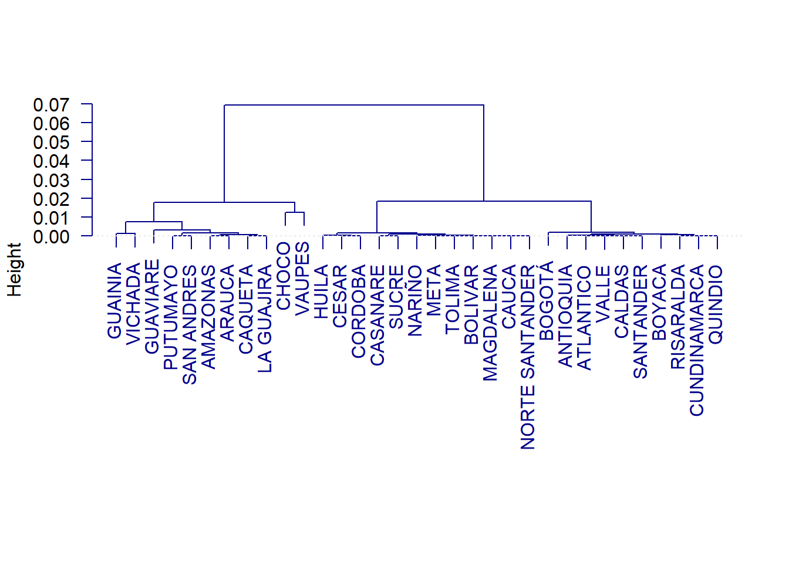
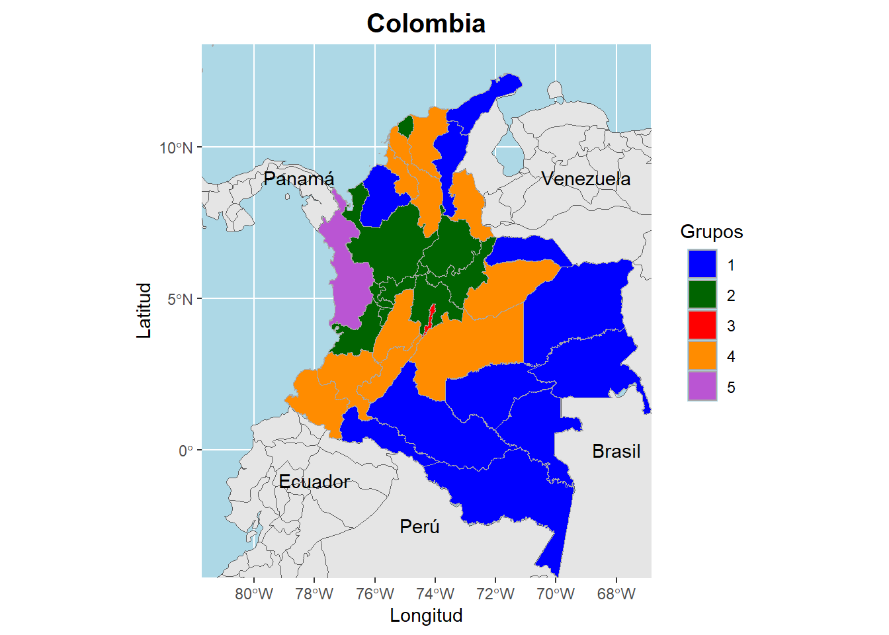

| globalCAT | Frecuencia |
|---|---|
| Bajo | 26667 |
| Medio Bajo | 25916 |
| Medio | 24418 |
| Medio Alto | 25078 |
| Alto | 25263 |
5 Agrupamiento
Dados los objetivos de este proyecto, se caracteriza a los departamentos de acuerdo a su puntaje, estos son clasificados en 5 grupos pensando en que departamentos que pertenecen a la misma región pueden tener resultados similares en el puntaje global.
Para realizar la clasificación, se utiliza una estrategia completa de agrupamiento, donde se mezclan diferentes técnicas multivariadas. Inicialmente se realiza un Análisis de Correspondecias Simples, ACS entre las variables Departamento de residencia del estudiante (ESTU_DEPTO_RESIDE) y el puntaje global recodificado en 5 categorías utilizando los percentiles (gobalCAT)
5.1 Procedimiento de agrupación
5.1.1 Paso 1
Realización del ACS entre las variables ESTU_DEPTO_RESIDE y gobalCAT
The number of retained axes for factorial analysis is 4
The number of axes for clustering is 4 Look the histogram of 25 indexes
Partition in 5 clusters5.1.2 Paso 2
Si bien la mayor parte de la inercia se va para un solo eje, para el agrupamiento seleccionamos los 4 ejes ya que no son “demasiados” y pueden servir para clasificar mejor a los individuos (departamentos).
5.1.3 Paso 3
No fue necesario realizar un K-means de pre-agrupamiento ya que solo se cuenta con 32 individuos (departamentos).
5.1.4 Paso 4
Los indices de agrupación jerárquica de los departamentos utilizando el método de Wald se muestran a continuación.
5.1.5 Paso 5
Como se mencionó previamente, el corte se hizo para 5 grupos, de modo que se obtienen los valores inciales para el K-means.
El dendograma de la agrupación jerárquica es:

5.1.6 Paso 6
A continuación, se muestran los cambios en tamaño y en la inercia luego del K-means
| Bef.Size | Aft.Size | Bef.Inertia | Aft.Inertia | |
|---|---|---|---|---|
| 1 | 12 | 11 | 0.0014 | 0.0011 |
| 2 | 9 | 9 | 0.0034 | 0.0034 |
| 3 | 1 | 1 | 0.0000 | 0.0000 |
| 4 | 10 | 11 | 0.0010 | 0.0012 |
| 5 | 2 | 2 | 0.0000 | 0.0000 |
| TOTAL | 34 | 34 | 0.0058 | 0.0057 |
En general, ni los tamaños de los grupos ni la inercia dentro-grupo se modificaron demasiado. El agrupamiento jerárquico dio una buena partición incial.
5.1.7 Paso 7
Caracterización y visualización de los grupos:
En el grupo 1 se tiene:
La categoría “Bajo” está sobre-representada, ya que el \(Test.Value = 29.99\) es muy alto y positivo. El \(33.9\%\) de los individuos en esta clase pertenecen a la categoría “Bajo”, lo cual es más alto que su proporción global del \(20.9\%\).
De forma similar, la categoría “Medio Bajo” está sobre-representada, ya que el \(Test.Value = 14.77\) es alto y positivo. El \(26.5\%\) de los individuos en esta clase pertenecen a la categoría “Medio Bajo”, lo cual es más alto que su proporción global del \(20.4\%\).
En contraste, la categoría “Alto” está sub-representada en la clase 1, con un \(Test.Value = -35.22\) y solo el \(7.2\%\) de los individuos en la clase 1 pertenecen a esta categoría, mientras que a nivel global, el \(19.8\%\) de los individuos están en la categoría “Alto”.
No les fue bien en el examen.
| Test.Value | p.Value | Class.Cat | Cat.Class | Global | Weight | |
|---|---|---|---|---|---|---|
| Bajo | 29.99 | 0 | 11.7 | 33.9 | 20.9 | 26648 |
| Medio Bajo | 14.77 | 0 | 9.4 | 26.5 | 20.4 | 25903 |
| Medio Alto | -16.18 | 0 | 5.0 | 13.5 | 19.7 | 25064 |
| Alto | -35.22 | 0 | 2.6 | 7.2 | 19.8 | 25232 |
Los departamentos que hacen parte del grupo 1 son:
| Depto | Cluster | |
|---|---|---|
| 1 | AMAZONAS | 1 |
| 3 | ARAUCA | 1 |
| 9 | CAQUETA | 1 |
| 12 | CESAR | 1 |
| 14 | CORDOBA | 1 |
| 17 | GUAINIA | 1 |
| 18 | GUAVIARE | 1 |
| 20 | LA GUAJIRA | 1 |
| 25 | PUTUMAYO | 1 |
| 28 | SAN ANDRES | 1 |
| 34 | VICHADA | 1 |
Los mejores ejes para visualizar este grupo son 1 y 3 de acuerdo con acs$cor.clus

En el grupo 2 se tiene:
La categoría “Alto” está sobre-representada, ya que el \(Test.Value = 10.13\) que es alto y positivo. El \(21.1\%\) de los individuos en esta clase pertenecen a la categoría “Alto”, lo cual es un poco más alto que su proporción global del \(21.1\%\).
De forma similar, la categoría “Medio Alto” está sobre-representada, ya que el \(Test.Value = 9.315\) que es alto y positivo. El \(20.9\%\) de los individuos en esta clase pertenecen a la categoría “Medio Alto”, lo cual es un poco más alto que su proporción global del \(20.4\%\).
Les fue bien en el examen.
| Test.Value | p.Value | Class.Cat | Cat.Class | Global | Weight | |
|---|---|---|---|---|---|---|
| Alto | 10.131 | 0 | 47.0 | 21.1 | 19.8 | 25232 |
| Medio Alto | 9.315 | 0 | 46.8 | 20.9 | 19.7 | 25064 |
| Medio Bajo | -6.652 | 0 | 42.4 | 19.5 | 20.4 | 25903 |
| Bajo | -12.884 | 0 | 40.7 | 19.3 | 20.9 | 26648 |
Los departamentos que hacen parte del grupo 2 son:
| Depto | Cluster | |
|---|---|---|
| 2 | ANTIOQUIA | 2 |
| 4 | ATLANTICO | 2 |
| 7 | BOYACA | 2 |
| 8 | CALDAS | 2 |
| 15 | CUNDINAMARCA | 2 |
| 26 | QUINDIO | 2 |
| 27 | RISARALDA | 2 |
| 29 | SANTANDER | 2 |
| 32 | VALLE | 2 |
Los mejores ejes para visualizar este grupo son 1 y 3 de acuerdo con acs$cor.clus
En el grupo 1 se tiene:
La categoría “Alto” está sobre-representada, ya que el \(Test.Value = Inf\) es muy muy alto y positivo. El \(29.2\%\) de los individuos en esta clase pertenecen a la categoría “Alto”, lo cual es más alto que su proporción global del \(19.8\%\).
De forma similar, la categoría “Medio Alto” está sobre-representada, ya que el \(Test.Value = 9.813\) es alto y positivo. El \(21.6\%\) de los individuos en esta clase pertenecen a la categoría “Medio Alto”, lo cual es un poco más alto que su proporción global del \(19.7\%\).
Les fue muy bien en el examen.
| Test.Value | p.Value | Class.Cat | Cat.Class | Global | Weight | |
|---|---|---|---|---|---|---|
| Alto | Inf | 0 | 37.6 | 29.2 | 19.8 | 25232 |
| Medio Alto | 9.813 | 0 | 28.0 | 21.6 | 19.7 | 25064 |
| Medio | -4.376 | 0 | 24.5 | 18.4 | 19.2 | 24398 |
| Medio Bajo | -19.595 | 0 | 20.9 | 16.6 | 20.4 | 25903 |
| Bajo | -35.851 | 0 | 17.3 | 14.2 | 20.9 | 26648 |
Los departamentos que hacen parte del grupo 2 son:
| Depto | Cluster | |
|---|---|---|
| 5 | BOGOTÁ | 3 |
Los mejores ejes para visualizar este grupo son 1 y 2 de acuerdo con acs$cor.clus
En el grupo 4 se tiene:
Es el único grupo donde el valor test para Medio no es negativo, sin embargo no es muy grande (\(6.872\)). El \(20.6\%\) de los individuos en esta clase pertenecen a la categoría “Medio”, lo cual es un poco más alto que su proporción global del \(19.2\%\)
La categoría “Bajo” está sobre-representada, ya que el \(Test.Value = 21.629\) es muy alto y positivo. El \(25.7\%\) de los individuos en esta clase pertenecen a la categoría “Bajo”, lo cual es más alto que su proporción global del \(20.9\%\).
De forma similar, la categoría “Medio Bajo” está sobre-representada, ya que el \(Test.Value = 17.91\) es alto y positivo. El \(24.2\%\) de los individuos en esta clase pertenecen a la categoría “Medio Bajo”, lo cual es un poco más alto que su proporción global del \(20.4\%\).
No les fue bien en el examen pero tampoco tan mal.
| Test.Value | p.Value | Class.Cat | Cat.Class | Global | Weight | |
|---|---|---|---|---|---|---|
| Bajo | 21.629 | 0 | 26.9 | 25.7 | 20.9 | 26648 |
| Medio Bajo | 17.913 | 0 | 26.1 | 24.2 | 20.4 | 25903 |
| Medio | 6.872 | 0 | 23.6 | 20.6 | 19.2 | 24398 |
| Medio Alto | -8.137 | 0 | 20.1 | 18.0 | 19.7 | 25064 |
| Alto | -Inf | 0 | 12.7 | 11.5 | 19.8 | 25232 |
Los departamentos que hacen parte del grupo 4 son:
| Depto | Cluster | |
|---|---|---|
| 6 | BOLIVAR | 4 |
| 10 | CASANARE | 4 |
| 11 | CAUCA | 4 |
| 16 | Desconocido | 4 |
| 19 | HUILA | 4 |
| 21 | MAGDALENA | 4 |
| 22 | META | 4 |
| 23 | NARIÑO | 4 |
| 24 | NORTE SANTANDER | 4 |
| 30 | SUCRE | 4 |
| 31 | TOLIMA | 4 |
Los mejores ejes para visualizar este grupo son 1 y 2 de acuerdo con acs$cor.clus

En el grupo 5 se tiene:
- La categoría “Bajo” está sobre-representada, ya que el \(Test.Value = 35.260\) es muy alto y positivo. El \(64.3\%\) de los individuos en esta clase pertenecen a la categoría “Bajo”, lo cual es muchísimo más alto que su proporción global del \(20.9\%\).
Les fue muy mal en el examen.
| Test.Value | p.Value | Class.Cat | Cat.Class | Global | Weight | |
|---|---|---|---|---|---|---|
| Bajo | 35.260 | 0.000 | 3.4 | 64.3 | 20.9 | 26648 |
| Medio Bajo | 2.071 | 0.038 | 1.2 | 22.3 | 20.4 | 25903 |
| Medio | -10.861 | 0.000 | 0.5 | 8.8 | 19.2 | 24398 |
| Medio Alto | -17.501 | 0.000 | 0.2 | 3.9 | 19.7 | 25064 |
| Alto | -23.143 | 0.000 | 0.0 | 0.6 | 19.8 | 25232 |
Los departamentos que hacen parte del grupo 5 son:
| Depto | Cluster | |
|---|---|---|
| 13 | CHOCO | 5 |
| 33 | VAUPES | 5 |
Los mejores ejes para visualizar este grupo son 1 y 2 de acuerdo con acs$cor.clus

En términos generales, al ordenar los grupos de acuerdo a los puntajes, en orden descendente, quedan:
- Grupo 3: Les fue muy bien
- Grupo 2: Les fue bien
- Grupo 4: No les fue bien … les fue medio y mal
- Grupo 1: Les fue mal
- Grupo 5: Les fue muy mal
5.2 Mapa de Colombia
